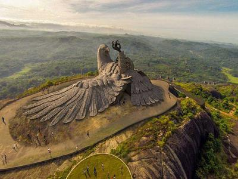

Kollam
One of the premier trade capitals of the Old World, Kollam is the centre of the country’s cashew trading and processing industry. Extolled by Marco Polo and Ibn Batuta in glowing terms, this was once a famous port of international spice trade. This historic town is home to the celebrated Ashtamudi Lake, making it a gateway to the breath-taking backwaters of Kerala. The eight-hour boat trip between Kollam and Alappuzha is the longest and most enchanting experience on the backwaters of Kerala. The momentous decision to introduce a new Malayalam era was convened at Kollam and hence the Malayalam calendar came to be known as kollavarsham.
Tourist Attractions

Jatayu Earth Center
Jatayu Nature Park is a rock-themed park under construction at Chandamalayam in Kollam district of Kerala, all set to open in August 2017. Built to promote mythology and adventure tourism, the tourism centre boasts of 6D theatre, an audio-visual digital room, cable car and ayurvedic cave resort. It is also a home to umpteen adventure activities including paint ball, laser tag, archery, bouldering, rock climbing, air-rifle shooting etc. The primary attraction of the park however, is the world’s largest stone-cut bird sculpture replicating Jatayu, the mythical bird from Ramayana.
Punalur
The town's name translates into 'town of water', the river Kallada flows through the city of Punalur. This town is also known as the 'lap of the Western Ghats' because of its serene natural beauty. Punalur is pretty famous for its pineapples, plywood, pepper and timber. It is also famous for its suspension bridge which was constructed was back in the 19th century by a British national. Punalur also has a bio-reserve known as Agasthyamalai.